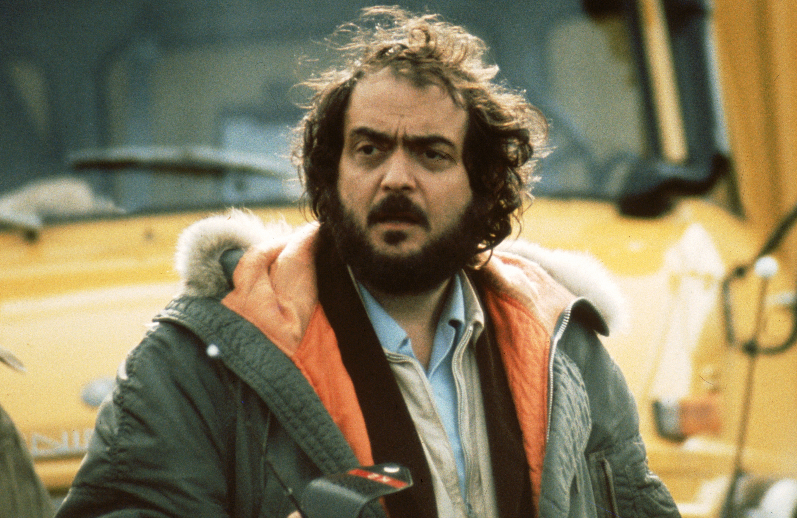

Stanley Kubrick

Stanley Kubrick was an American film director, producer, screenwriter, and photographer. He is frequently cited as one of the greatest filmmakers in cinematic history.
Filmography
- Day of the Flight (1951)
- Flying Padre (1951)
- Fear and Desire (1953)
- The Seafarers (1953)
- Kller's Kiss (1955)
- The Killing (1956)
- Paths of Glory (1957)
- Spartacus (1960)
- Lolita (1962)
- Dr. Strangelove (1964)
- 2001: A Space Odyssey (1968)
- A Clockwork Orange (1971)
- Barry Lyndon (1975)
- The Shining (1980)
- Full Metal Jacket (1987)
- Eyes Wide Shut (1999)